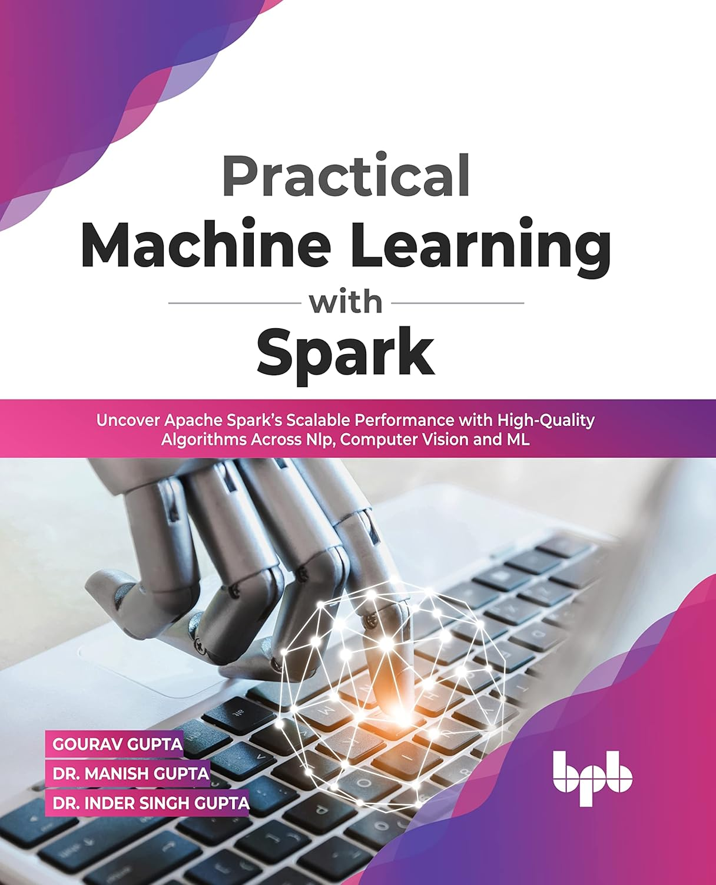

1
Shallow Match
Checks labels, synonyms and terminology alignment using data dictionaries and standards.
I am a researcher working at the intersection of clinical decision support, healthcare interoperability, medical coding, knowledge graphs, Generative AI and multi-agent systems. My research theme is CDSS redeployment: understanding differences among clinical variables, analysing them through differential dimensions, selecting adaptation strategies, validating the adapted logic and supporting the generation of candidate CDSS options for a target healthcare environment.
My core research contribution is a structured way to redeploy CDSSs by comparing clinical variables across environments, identifying differential dimensions, selecting adaptation strategies, validating the changes and ranking candidate CDSS options.
Checks labels, synonyms and terminology alignment using data dictionaries and standards.
Compares clinical definitions, meaning and variable intent beyond the label.
Assesses unit, datatype, scale, category and value representation differences.
Examines context such as device, timing, sample type, posture and measurement conditions.
Looks at population mix, distributions, missingness and data-level behaviour across environments.
Search or filter publications by year and type.
Presents VarDiff, a structured multi-dimensional framework for representing and analysing variable-level differences during CDSS redeployment. It defines differential dimensions, differential possibilities and workflow guidance for comparing variables within one environment or across source and target healthcare ecosystems.
Validates the qualitative analysis of the SMD framework using expert-informed survey and interview evidence. The paper examines the relevance, completeness, ordering and practical applicability of shallow match, deep match, representation match, metadata match and data distribution match.
Describes five levels of matching required for CDSS redeployment: shallow, deep, representation, metadata and data match. The paper explains why simple transfer between healthcare organisations is often not viable without structured difference analysis.
Proposes an Adaptive Semantic Framework for adapting CDSSs to changing environments by combining knowledge-based systems, data-driven elements and hybrid adaptation strategies.
Applied projects across healthcare AI, clinical informatics, graph AI, interoperability and Generative AI.


Experience with HL7 FHIR, openEHR, OMOP CDM, LOINC, SNOMED CT, UMLS, UCUM, ICD-10-AM and SNOMED CT-AU/AM for CDSS redeployment, terminology mapping, unit conversion, data-dictionary checking, metadata alignment and interoperable clinical workflows.

Collaborative project led by Prach and supported by my knowledge of Generative AI, graph-based clinical representation and clinical informatics. The project validates clinical graphs using weighted scores for concept relevance, node-edge relationships, evidence alignment, semantic consistency and graph-level reliability.
Integrated LLMs, knowledge bases and speech models to interpret EEG patterns and convert technical signals into more understandable clinical sentences.
Designed evaluation thinking around reproducible checks such as faithfulness, groundedness, bias, traceability and safety for healthcare AI and clinical documentation workflows.
Worked on healthcare AI concepts involving clinical documentation, structured templates, terminology mapping, coding support and on-premise LLM workflows for safer clinical information generation.
A combined research and industry journey across healthcare AI, analytics, HR technology, software engineering, biometrics and applied machine learning.
VarDiff introduces a structured multi-dimensional framework for representing variable-level differences between CDSSs. It formalises shallow, deep, representation, metadata and data dimensions for comparing variables within or across healthcare ecosystems. Read the paper.
Prepared a research manuscript validating the SMD framework through expert survey and interview evidence, focusing on relevance, completeness, ordering and practical applicability.
Contributed Generative AI, graph-based modelling and clinical informatics knowledge to Prach's clinical graph validation project using weighted scoring.
Presented the levels of matching required when redeploying CDSSs across different healthcare ecosystems.
Proposed an Adaptive Semantic Framework combining knowledge-based systems and data-driven elements for CDSS adaptation to new environments.
Analysed the literature, identified research gaps, proposed the methodology and submitted the research proposal.
Technical, research and healthcare informatics capabilities.
Academic reviewing across medical informatics, digital health, AI and computing research.
Reviewer for manuscripts related to medical informatics, healthcare AI, clinical decision support, interoperability and digital health.
Reviewer for manuscripts in clinical decision support systems, healthcare AI, digital health and applied informatics.
Reviewer for manuscripts in AI, Generative AI, analytics, computational methods and healthcare-related research.
Reviewer for survey and review manuscripts in AI, Generative AI, analytics and computing research.
Published teaching and technical writing experience.

Published book covering MLlib, pipelines, neural networks, computer vision and applied machine learning workflows using Apache Spark.
Short articles and public knowledge-sharing posts on healthcare AI and agentic systems.
Explains the transition from traditional AI to agentic AI in healthcare workflows.
Discusses MCP and agent-to-agent workflows for healthcare use cases.
Explores how LLMs can support terminology harmonisation and clinical data gap analysis.
This section helps non-specialist readers quickly understand the profile.
Healthcare organisations collect similar clinical information in different ways. A CDSS built in one place may fail in another if variable names, definitions, units, metadata or patient populations differ. My research provides a structured way to identify and reason about those differences before redeployment.
Standards such as HL7 FHIR, openEHR, OMOP, LOINC, SNOMED CT, UMLS, UCUM and ICD support data exchange, terminology mapping, unit standardisation and medical coding. My work uses them as foundations, while also examining their limits for variable-level CDSS redeployment.
My previous industry roles exposed me to real-world software, analytics, AI and organisational workflows across multiple domains. This helps me design research that is practical, implementation-aware and not limited to algorithmic performance alone.